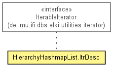

de.lmu.ifi.dbs.elki.utilities.datastructures.hierarchy
Class HierarchyHashmapList.ItrDesc
java.lang.Object
 de.lmu.ifi.dbs.elki.utilities.datastructures.hierarchy.HierarchyHashmapList.ItrDesc
de.lmu.ifi.dbs.elki.utilities.datastructures.hierarchy.HierarchyHashmapList.ItrDesc
- All Implemented Interfaces:
- IterableIterator<O>, Iterable<O>, Iterator<O>
- Enclosing class:
- HierarchyHashmapList<O>
private class HierarchyHashmapList.ItrDesc
- extends Object
- implements IterableIterator<O>

Iterator to collect into the descendants.
| Methods inherited from class java.lang.Object |
clone, equals, finalize, getClass, hashCode, notify, notifyAll, toString, wait, wait, wait |
start
final O start
- Starting object (for cloning);
childiter
final Iterator<O> childiter
- Iterator over children
subiter
Iterator<O> subiter
- Iterator of current child
HierarchyHashmapList.ItrDesc
public HierarchyHashmapList.ItrDesc(O start)
hasNext
public boolean hasNext()
- Specified by:
hasNext in interface Iterator<O>
next
public O next()
- Specified by:
next in interface Iterator<O>
remove
public void remove()
- Specified by:
remove in interface Iterator<O>
iterator
public Iterator<O> iterator()
- Specified by:
iterator in interface Iterable<O>